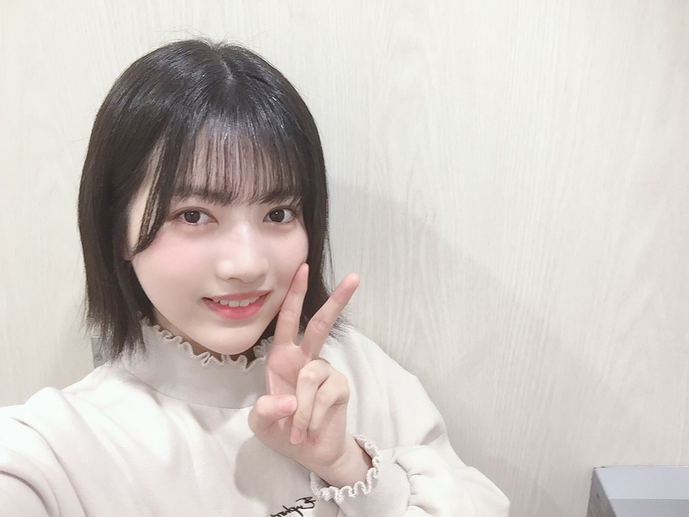
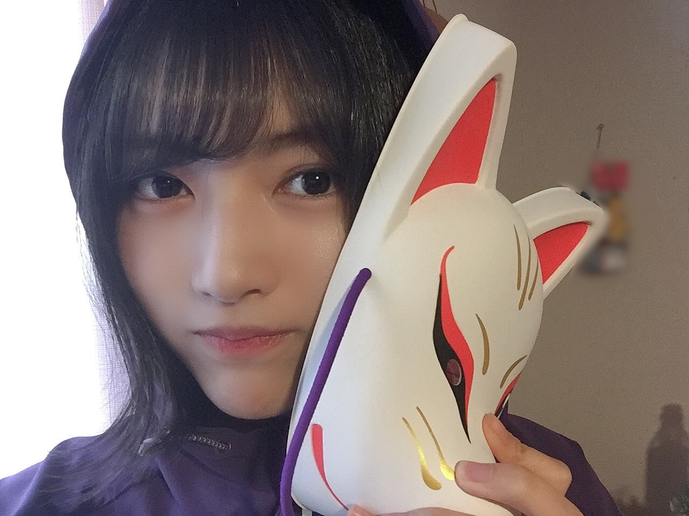
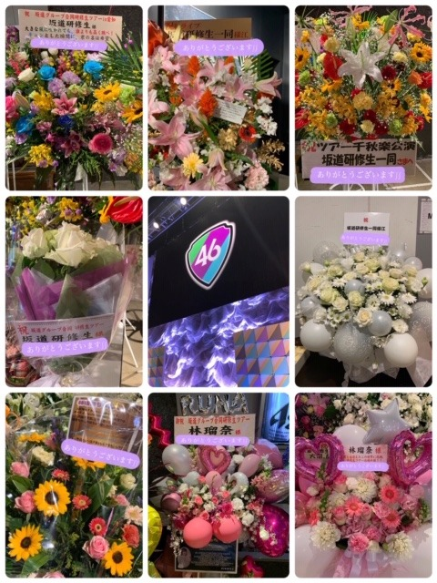

2020/0429Wedお疲れ様です！林瑠奈と申します。
本日もお疲れ様です！！
初めてお目にかかる方もそうでない方も、こちらのブログを開いて頂き誠にありがとうございます。
乃木坂46新4期生となりました、林瑠奈です。

↑外の林瑠奈
今週から始まりました。リレーブログです。
最初に言います。長いです。
佐藤璃果ちゃんという可視化された天使からバトンを受け取りました。
(リレーは経験がないのでバトンを落としかけましたが、そんなこともあろうかと手の平には木工用ボンドを塗りました。安心して下さい)
ブログというありがたい場を頂けて本当に感謝しています。
これからどうぞよろしくお願い致します。
自己紹介をさせて下さい。
...........................................................................
名前は林瑠奈(はやしるな)です。
オーディションのSHOWROOM審査では
エントリーナンバー8番で、「もやしちゃん」と呼ばれていました。
呼び方を色々と考えたのですが、こちらは
大園玲ちゃん(欅坂46さん新2期生)発案の
「るなぴ」でお願いします。
らしくないでしょう？だからこれにしました。
もちろん「もやしちゃん」でも「フーファイ」でも大丈夫です。
あと、ネタ枠で「るなっさんす」もあります。
でもこれで呼ぶときはテンション884%くらいで呼んでもらわないと頂けないです。
あれ、うっかりはやしになっちゃったっ てへ//
平成15年10月2日生まれの華咲くシックスティーンです。(未年の天秤座、O型)
兵庫県生まれの神奈川県育ちです。
普段は関西弁で話していて、「今日も1日頑張るな」の"頑張るな"は関西のイントネーションです。
身長は164cmで、まだまだ伸びています。
特技は今まで色々と挙げているのですが、どれもしょうもないことばかりで迷走しています。
(最近はラジオパーソナリティーのものまねと、漫才ネタの完コピです。)
好きな食べ物は、オムライス トマト おにぎり 梅干し もやし
そしてお待ちかね...ごはん(ライス)です。
ライスください！！！！！！！れ！
(！ これ打つとたまに「れ」になりません？)
好きなアーティストは、アイドル バンド ボーカロイドetc...なんでも聴きます。
(「むかしむかしのきょうのぼく」この曲は本当に好きで、特に3番のサビ前は今の自分と重なります。おっと、話がそれちゃった てへへ。いつか詳しく書きます。)
よく真顔が怖い、怒ってそうと言われます。そういうときは大抵緊張しているときです。決して怒っているわけでも機嫌が悪いわけでもありません。でもわかります。
\\ 確かにめっちゃこわい。//
口角を上げる意識はしていますが、自撮りでも引きつり顔のときがあります。もっと意識します。
ざっくりこんな感じです。

↑内の林瑠奈
...........................................................................
今まで経験させて頂いたこと、そして今こうしてわたしが言葉を綴れているのは、偉大な先輩方や今まで支えてくださった沢山のスタッフの方、そしてみなさんのおかげです。
SHOWROOM審査の頃から待っていてくださった方
研修生ツアーに足を運んでくださった方
わたしを見つけてくれたあなた(ここ非常に大事)
本当に本当に感謝しています。
...........................................................................
次回からのブログで今までの坂道研修生ヒストリーについて1つづつお話ししていきます。
↑ここ言うの難しいです。
坂道研修生ツアーで頂いたお花です。

本当に綺麗です。ライブ前のストレッチはこの祝花さんたちのすぐ近くでしていたのですが、わたしは1人全力で空気を吸っていました。
超有酸素運動です。
素晴らしい素敵なお花をありがとうございます。頭の中で香りを再現します。
...........................................................................
わたしの名前である"るな"は"月"という意味があります。月は太陽の光がないと輝けません。みんなが見ていないところで光を灯しています。
わたしの名前には「誰にも見えないところでも努力ができる人になって欲しい」という意味があるのだとか。(諸説あります。)
とはいえ本当にわたしはみなさんがいないと輝けません。だから照らしてください。
あなたが照らしてくれるからわたしが輝けます。いつか、わたしがいるからあなたが輝ける。
素直になれないし真顔怖いし不器用なところも多いですが、そんな風になれるように命懸けて頑張ります。
これからどうぞよろしくお願い致します！！！
...........................................................................
申し訳ありません、長くなってしまいました。
明日は妖精の松尾美佑ちゃんです。
みゆちゃんはわたしの大先生であり、みんなの天使であります。いや、わたしだけのかもしれません。きっと明日もみゆスマイルを届けてくれます。みゆちゃん大好き
あっお待たせしました。
負けるなしょげるな林瑠奈、今日も1日頑張るな
頑張ってもいいし、疲れたら休むでもオッケーです。
読んでくださりありがとうございました。
アディオス！！！！！！！！！！！！！
2020/04/29 13:30
コメント(1259)
おつかれやで！
乃木中見たよ！
これからも頑張って！
これからも頑張って！
瑠奈ちゃん初ブログおめでとう
瑠奈ちゃん推しです
瑠奈ちゃん推しです
ブログ更新ありがとう！
初めまして！みつきです。
瑠奈ちゃんのこと大好きです。 。
。
研修生ライブお疲れ様でした！私が印象に残っているのは誰よりも高く跳べです。といっても試験で行けなかったのですが友達に聞きました。
雑誌も見ました！チェキ当たると良いなぁー。
ここで質問です。
◎瑠奈ちゃんのことなんて呼べば良い？
◎瑠奈ちゃんの好きな髪型は？
◎瑠奈ちゃんの好きな四字熟語は？
◎瑠奈ちゃんの好きな天気は？
◎好きっていってください。
◎今コロナの時期ですけど何やってますか？
◎4期生の中で仲の良い子は？
それでは！またコメントするね！
ʕ•̫͡•ʕ•̫͡•ʔ•̫͡•ʔ•̫͡•ʕ•̫͡•ʔ•̫͡•ʕ•̫͡•ʕ•̫͡•ʔ•̫͡•ʔ•̫͡•ʕ•̫͡•ʔ•̫͡•ʔ
みつきより
初めまして！みつきです。
瑠奈ちゃんのこと大好きです。
研修生ライブお疲れ様でした！私が印象に残っているのは誰よりも高く跳べです。といっても試験で行けなかったのですが友達に聞きました。
雑誌も見ました！チェキ当たると良いなぁー。
ここで質問です。
◎瑠奈ちゃんのことなんて呼べば良い？
◎瑠奈ちゃんの好きな髪型は？
◎瑠奈ちゃんの好きな四字熟語は？
◎瑠奈ちゃんの好きな天気は？
◎好きっていってください。
◎今コロナの時期ですけど何やってますか？
◎4期生の中で仲の良い子は？
それでは！またコメントするね！
ʕ•̫͡•ʕ•̫͡•ʔ•̫͡•ʔ•̫͡•ʕ•̫͡•ʔ•̫͡•ʕ•̫͡•ʕ•̫͡•ʔ•̫͡•ʔ•̫͡•ʕ•̫͡•ʔ•̫͡•ʔ
みつきより
るなっぴ ブログ更新ありがとうございますこれから頑張っていきましょう
るなちゃん！初めまして、はるです(。・∀・。)私は、よくファンレターを書くのですが、覚えていますか？私は、まだ小学6年生です。ライブに行きたくても、行けないけど、握手会には行けたら良いな、と思っています！
さっそく質問です！
○私のあだ名を付けて欲しいです!
○握手する時、何言えばいいですか？
答えてくれたら嬉しいです♡1番の推しです！応援してます！
はる
さっそく質問です！
○私のあだ名を付けて欲しいです!
○握手する時、何言えばいいですか？
答えてくれたら嬉しいです♡1番の推しです！応援してます！
はる
初めまして！！
これからよろしく！！
これからよろしく！！
るなちゃんこんにちは( ◜ω◝ )
乃木坂工事中見ました☺️
新4期生の中での推しはるなちゃんなのでこれからも応援します\( ˆˆ )/(ちなみに主は清宮さん)
乃木坂工事中見ました☺️
新4期生の中での推しはるなちゃんなのでこれからも応援します\( ˆˆ )/(ちなみに主は清宮さん)
初ブログおめでとう！
新4期生の推しメンです。
これから応援します！
新4期生の推しメンです。
これから応援します！
ブログありがとうございます
これからるなちゃんのブログとても楽しみです！体調に気をつけて頑張ってください❗️
これからるなちゃんのブログとても楽しみです！体調に気をつけて頑張ってください❗️
るなちゃん！
ブログ待ってたよ~
ブログ待ってたよ~
フーファイさん
お疲れさまです
ブログありがとうございます。
とても待っておりました。
研修生ツアーでひと目見てから気になっておりました。
これからも応援させていただきます。
お疲れさまです
ブログありがとうございます。
とても待っておりました。
研修生ツアーでひと目見てから気になっておりました。
これからも応援させていただきます。
林瑠奈ちゃんはじめまして❗るなちゃんを、乃木中で見てからとても面白い人だなと思っています。(もちろんすごく可愛いです) これから応援していきます頑張ってください
おはよう！よろしくね！
アディオス！
んー、髪質。
まじで好きです(笑)
これからよろしくお願いします
これからよろしくお願いします
はじめまして！
工事中で見てからずっと楽しみにしてました(^^)
ブログ更新おめでとう！
これからの活躍期待してます！！
工事中で見てからずっと楽しみにしてました(^^)
ブログ更新おめでとう！
これからの活躍期待してます！！
かわいいー！これから応援するね！！
初ブログおめでとう！
ずっと待ってた！もやしちゃんからの瑠奈ちゃんからのるなぴ、これからはるなぴって呼ぶね〜
ショールームの最初の放送から配属とかのブログまで色々あったね、これからずっと応援していくからよろしくね！
ずっと待ってた！もやしちゃんからの瑠奈ちゃんからのるなぴ、これからはるなぴって呼ぶね〜
ショールームの最初の放送から配属とかのブログまで色々あったね、これからずっと応援していくからよろしくね！
こんにちは！！これから宜しくお願いします！！面白いですね笑
同い年やね！！
これからも頑張ってください！
応援してます(๑•̀ㅂ•́)و✧
これからも頑張ってください！
応援してます(๑•̀ㅂ•́)و✧
めっちゃ綺麗で可愛い！！！
頑張って！！
頑張って！！
るなぴこれからよろしくね！
るなちゃん、面白すぎます笑
乃木坂工事中で見せた姿はほんの1片に過ぎませんね。
これから色んな面を知るのが楽しみです！
応援してます！会える日を本当に楽しみにしてます！！
乃木坂工事中で見せた姿はほんの1片に過ぎませんね。
これから色んな面を知るのが楽しみです！
応援してます！会える日を本当に楽しみにしてます！！
ライスください‼️
これからよろしくお願いします!!!!
なんと誕生日が９日違い(微妙...)な男子高校生です
るなび、がんばれー！
アディオス!!!!
なんと誕生日が９日違い(微妙...)な男子高校生です
るなび、がんばれー！
アディオス!!!!
！！！！れ！！！！なります笑
乃木坂工事中を見て好きになりました！
これからたくさん楽しいこと難しいこと経験すると思いますが
先輩たちも笑ったり泣きながら経験してきたことなので
一生懸命頑張ってください。
応援し続けます！
るなぴ大好き！
これからたくさん楽しいこと難しいこと経験すると思いますが
先輩たちも笑ったり泣きながら経験してきたことなので
一生懸命頑張ってください。
応援し続けます！
るなぴ大好き！
初めまして！！！
今日から毎回コメントするけんね！
すっごく応援しちょるよーっ
今日から毎回コメントするけんね！
すっごく応援しちょるよーっ
瑠奈ちゃんに数学習いたいです
林ちゃん初めまして！！
１コメやった！
林ちゃんの自己紹介面白かったし可愛かった！
これからも応援しています。
大好きです！
１コメやった！
林ちゃんの自己紹介面白かったし可愛かった！
これからも応援しています。
大好きです！
これからまだまだ色々大変だと思うけど頑張って！応援してる！
林瑠奈ちゃんこんにちは！
初めてのブログ更新ありがとうございます！初っ端からありえん可愛い自撮りを載せてくれてありがとう！
林瑠奈ちゃんも沢山あだ名があるんだね！どのあだ名も可愛いね！
ところで話は変わりますが、坂道研修生時代に掲載された週刊プレイボーイの色紙に書いてあった「学校の部活ではギロボーカルをやっていました」という一文が気になりすぎて夜も眠れません。朝は起きれます。
部活の「ギロボーカル」とは何でしょう？
教えてくれたらうれしいです！
次のブログも待ってま〜す
初めてのブログ更新ありがとうございます！初っ端からありえん可愛い自撮りを載せてくれてありがとう！
林瑠奈ちゃんも沢山あだ名があるんだね！どのあだ名も可愛いね！
ところで話は変わりますが、坂道研修生時代に掲載された週刊プレイボーイの色紙に書いてあった「学校の部活ではギロボーカルをやっていました」という一文が気になりすぎて夜も眠れません。朝は起きれます。
部活の「ギロボーカル」とは何でしょう？
教えてくれたらうれしいです！
次のブログも待ってま〜す
坂道研修生ツアーzepp nagoya行ったよー！楽しかったよー！
るなぴー！
頑張れ！
頑張れ！
ブログ楽しみにしていました！！
自撮りとか多めだと嬉しいです！
最後のアディオス！ってなんかオードリーのオールナイトニッポンとかコロコロコミックの怪盗ジョーカーとか思い出すけどなんでアディオスなの？笑笑
自撮りとか多めだと嬉しいです！
最後のアディオス！ってなんかオードリーのオールナイトニッポンとかコロコロコミックの怪盗ジョーカーとか思い出すけどなんでアディオスなの？笑笑
ブログ更新ありがとう！
ブログだとめっちゃ喋るね（笑）
見てて笑顔になるよ、これからも頑張って ✨
ブログだとめっちゃ喋るね（笑）
見てて笑顔になるよ、これからも頑張って ✨
なんか庶民的で親しみやすくて最高です！！！れ！
！れのやつ超わかりますw
あなたの推しになりました(ここ重要)
！れのやつ超わかりますw
あなたの推しになりました(ここ重要)
初めまして！
瑠奈ちゃんブログ更新ありがとう！！
とても楽しく読ませていただきました笑
ところで以前から気にはなってたんですがギロボーカルというのは一体どんなものなんでしょうか？笑
めちゃくちゃ気になります笑
教えてくれたら嬉しい！
これからも応援してます！！
瑠奈ちゃんブログ更新ありがとう！！
とても楽しく読ませていただきました笑
ところで以前から気にはなってたんですがギロボーカルというのは一体どんなものなんでしょうか？笑
めちゃくちゃ気になります笑
教えてくれたら嬉しい！
これからも応援してます！！
初ブログおめでとうございます！更新ありがとうございます！
ごはん(ライス)！！ライスください！！！！！！！
質問なんですが、ギロボーカルとは何ですか？？？？
ごはん(ライス)！！ライスください！！！！！！！
質問なんですが、ギロボーカルとは何ですか？？？？
がんばるな！！
るなちゃん〜！初ブログ更新！おめでとう〜(ぱふぱふ)
るなちゃんの事は乃木坂に配属が決まった時に一目惚れしてしまいました(´._.`) そしてなんと！名前も同じなんだ〜〜！嬉しいな☺︎
乃木坂に配属が決まった時からなので、研修生ツアー時のるなちゃんエピソードはお友達から沢山教えて貰ってるんです！ でももっと沢山るなちゃんの事知りたいな〜！って思ってるので、これからブログを通して沢山るなちゃんの事を知れるといいな☺︎(ボーカロイド私も大好きです！！！れ！)これから握手会もあるだろうし、沢山会いに行くから待っててね(；；) これから末永く♡よろしくお願いします♬︎♡
るな
るなちゃんの事は乃木坂に配属が決まった時に一目惚れしてしまいました(´._.`) そしてなんと！名前も同じなんだ〜〜！嬉しいな☺︎
乃木坂に配属が決まった時からなので、研修生ツアー時のるなちゃんエピソードはお友達から沢山教えて貰ってるんです！ でももっと沢山るなちゃんの事知りたいな〜！って思ってるので、これからブログを通して沢山るなちゃんの事を知れるといいな☺︎(ボーカロイド私も大好きです！！！れ！)これから握手会もあるだろうし、沢山会いに行くから待っててね(；；) これから末永く♡よろしくお願いします♬︎♡
るな
ブログ初投稿待ってました！！瑠奈さんのワードセンス好き！読んでて楽しい！！次のブログ更新を待ってます！！
るなちゃん初ブログありがとう！！
新たな風を吹かせてください〜◎
いつか会える日を待ってます♡
新たな風を吹かせてください〜◎
いつか会える日を待ってます♡
瑠奈ちゃんブログ更新ありがと！！
カナダから読んでるよー！
早く握手会に行って握手してみたいー
これからずっと読んでいくねー！
カナダから読んでるよー！
早く握手会に行って握手してみたいー
これからずっと読んでいくねー！
るなちゃん
こんにちは
これからの乃木坂46を盛り上げてください！！
応援してます
こんにちは
これからの乃木坂46を盛り上げてください！！
応援してます
瑠奈ちゃん！はじめまして！
初ブログ更新おめでとう！！
そして乃木坂配属おめでとう！！
ずっと心待ちにしてました♡
これからも応援してます♡照らしまくります！笑
更新も楽しみにしてます！
初ブログ更新おめでとう！！
そして乃木坂配属おめでとう！！
ずっと心待ちにしてました♡
これからも応援してます♡照らしまくります！笑
更新も楽しみにしてます！
文章のテンションが想像と違ってて、すごく面白かったです（笑）☆
これから応援していきますので、よろしくお願いします。
がんばってくださいね！
これから応援していきますので、よろしくお願いします。
がんばってくださいね！
コメントする

PROFILE
新4期生リレー
202104
| SUN | MON | TUE | WED | THU | FRI | SAT |
|---|---|---|---|---|---|---|
| 1 | 2 | 3 | ||||
| 4 | 5 | 6 | 7 | 8 | 9 | 10 |
| 11 | 12 | 13 | 14 | 15 | 16 | 17 |
| 18 | 19 | 20 | 21 | 22 | 23 | 24 |
| 25 | 26 | 27 | 28 | 29 | 30 | |

もやしってSHOWROOMのころから呼ばれてたよね笑笑
研修生ツアーめっちゃ楽しく見させて貰いました！計算の884になるのも面白かった！
また言いたいこといっぱいあるから書くね！